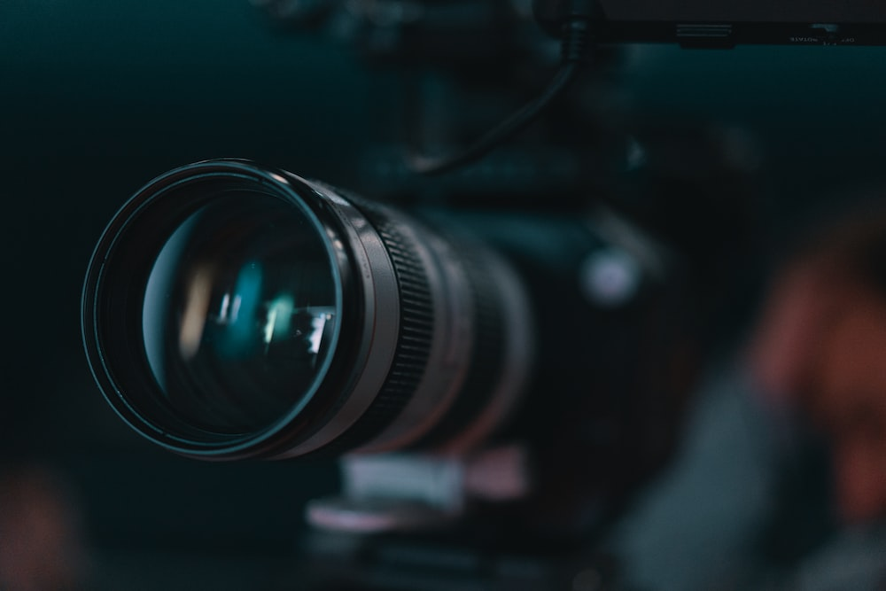
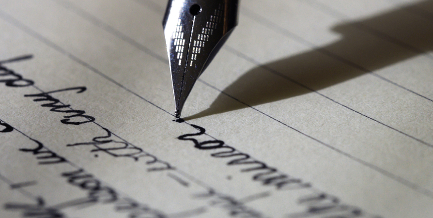

Hobbies
Photography and Videography

Love to take photos and videos on my camera. The type of camera I have is a Canon EOS M50. It is good for taking photos and making videos. Like to upload my photos and videos on my MacBook Pro. Enjoy playing around with iMovie, but I am still learning how to edit videos. Eventually, want to learn how to edit photos as well.
Writing
